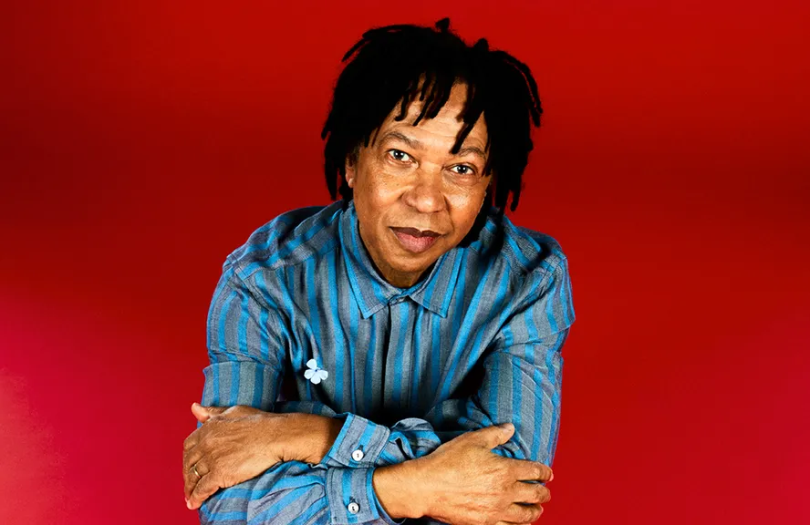
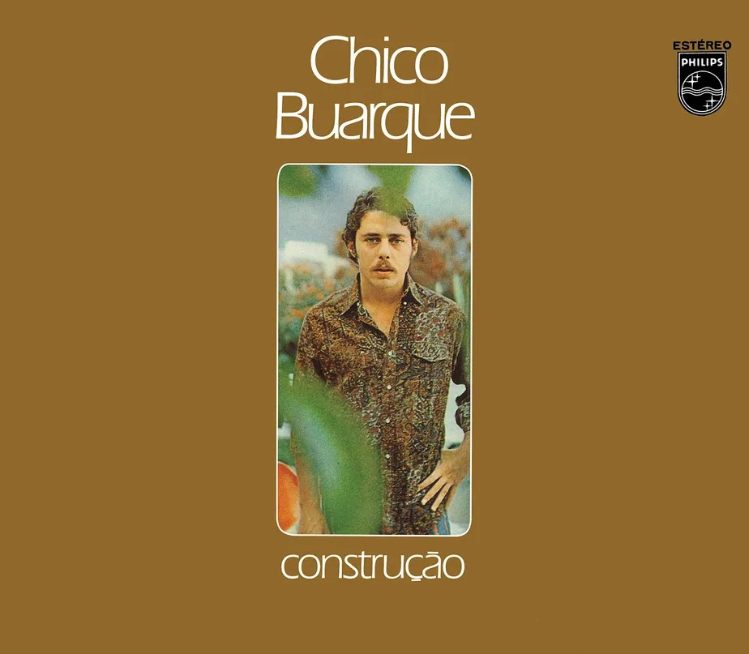
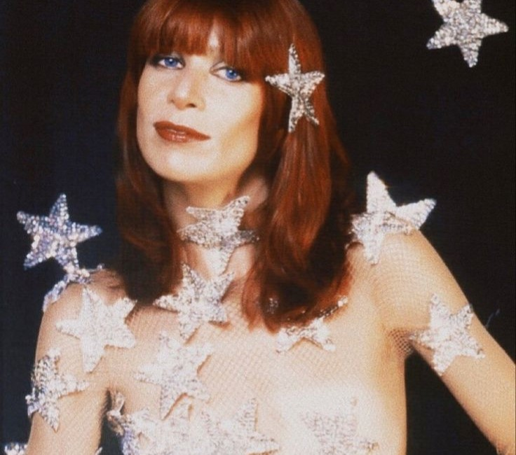
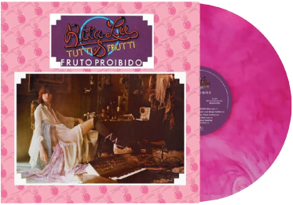
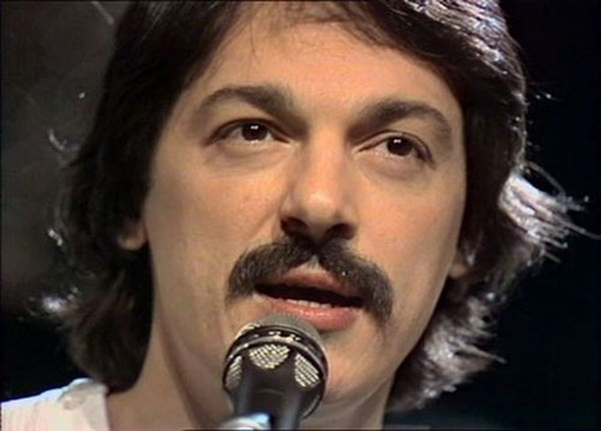
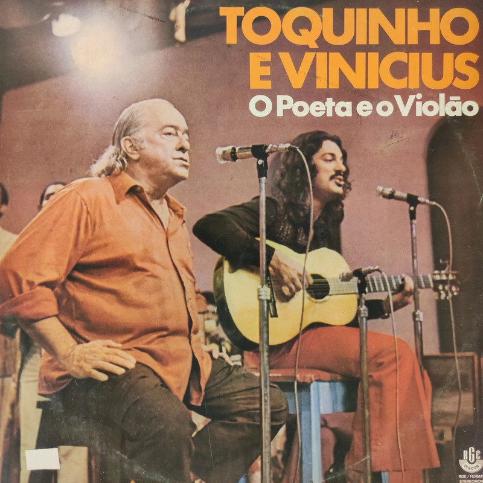
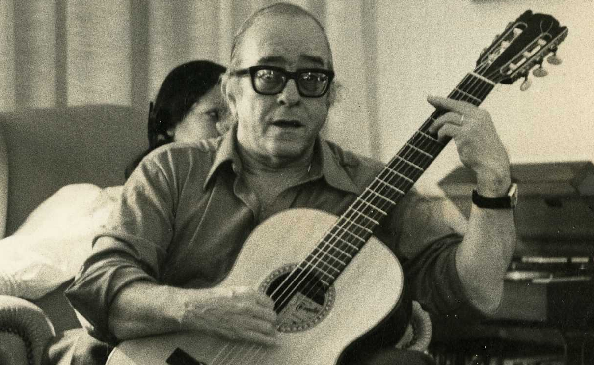
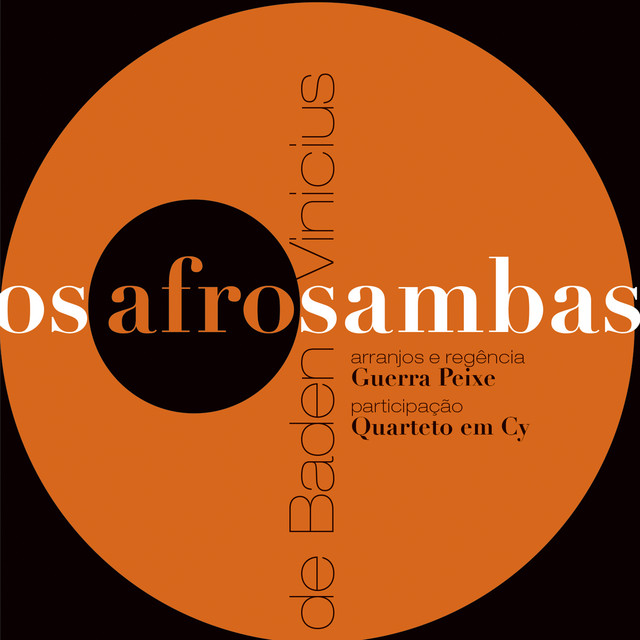

Músicos da MPB
Djavan
Gênero Musical: MPB, Bossa Nova, Jazz
Início do Sucesso: Anos 1980
Curiosidade: Famoso por sua habilidade em misturar MPB com jazz e ritmos afro-brasileiros.
Vibe das Músicas: Romance e Reflexão

Álbum de Destaque: Luz (1982)
Prêmio Mais Importante: Grammy Latino de Melhor Álbum de Música Brasileira (2005)
Chico Buarque
Gênero Musical: MPB, Samba
Início do Sucesso: Anos 1960
Curiosidade: Exímio compositor e letrista, além de escritor e dramaturgo.
Vibe das Músicas: Crítica social, romance
Álbum de Destaque: Construção (1971)
Prêmio Mais Importante: Prêmio Jabuti de Literatura (2003)
Rita Lee
Gênero Musical: Rock, MPB
Início do Sucesso: Anos 1960
Curiosidade: Considerada a "Rainha do Rock Brasileiro", sempre inovadora no seu estilo musical.
Vibe das Músicas: Liberdade e Rebeldia
Álbum de Destaque: Fruto Proibido (1975)
Prêmio Mais Importante: Grammy Latino de Melhor Álbum de Música Brasileira (2010)
Toquinho
Gênero Musical: MPB, Bossa Nova
Início do Sucesso: Anos 1960
Curiosidade: Conhecido por seu trabalho como compositor e violonista, principalmente em parceria com Vinicius de Moraes.
Vibe das Músicas: Romântica, Poética
Álbum de Destaque: Toquinho e Vinícius (1971)
Prêmio Mais Importante: Prêmio Shell de Melhor Compositor (1990)
Vinicius de Moraes
Gênero Musical: MPB, Samba, Bossa Nova
Início do Sucesso: Anos 1950
Curiosidade: Poeta, dramaturgo e diplomata, além de ser um dos maiores nomes da Bossa Nova.
Vibe das Músicas: Romance, Poético
Álbum de Destaque: Os Afro-sambas (1966)
Prêmio Mais Importante: Prêmio Shell de Música (1983)
Tom Jobim

Gênero Musical: MPB, Bossa Nova
Início do Sucesso: Anos 1950
Curiosidade: Considerado o criador da Bossa Nova, sua música é famosa no mundo inteiro.
Vibe das Músicas: Romântica, Melódica

Álbum de Destaque: Wave (1967)
Prêmio Mais Importante: Grammy Hall of Fame (1999)
Jorge Ben Jor

Gênero Musical: Samba, MPB, Bossa Nova
Início do Sucesso: Anos 1960
Curiosidade: Mestre do samba rock e influente no samba moderno.
Vibe das Músicas: Dançante, Energética

Álbum de Destaque: África Brasil (1976)
Prêmio Mais Importante: Prêmio de Melhor Álbum de Samba (2009)
Tim Maia

Gênero Musical: Soul, MPB, Funk
Início do Sucesso: Anos 1970
Curiosidade: Influenciado pela soul music e funk norte-americana, Tim Maia criou um estilo único no Brasil.
Vibe das Músicas: Soul e Romance

Álbum de Destaque: Tim Maia (1970)
Prêmio Mais Importante: Prêmio da Crítica de Melhor Álbum de MPB (1988)
Charlie Brown Jr

Gênero Musical: Rock, MPB
Início do Sucesso: Anos 1990
Curiosidade: Banda que misturava rock, reggae e rap, sendo ícone do rock brasileiro dos anos 2000.
Vibe das Músicas: Rebeldia, Crítica social

Álbum de Destaque: Acústico MTV (2003)
Prêmio Mais Importante: MTV Video Music Brasil (2003)
Elis Regina

Gênero Musical: MPB, Samba
Início do Sucesso: Anos 1960
Curiosidade: Uma das vozes mais potentes e influentes da música brasileira.
Vibe das Músicas: Emocional, Crítica social

Álbum de Destaque: Elis & Tom (1974)
Prêmio Mais Importante: Prêmio Grammy Latino (2003)